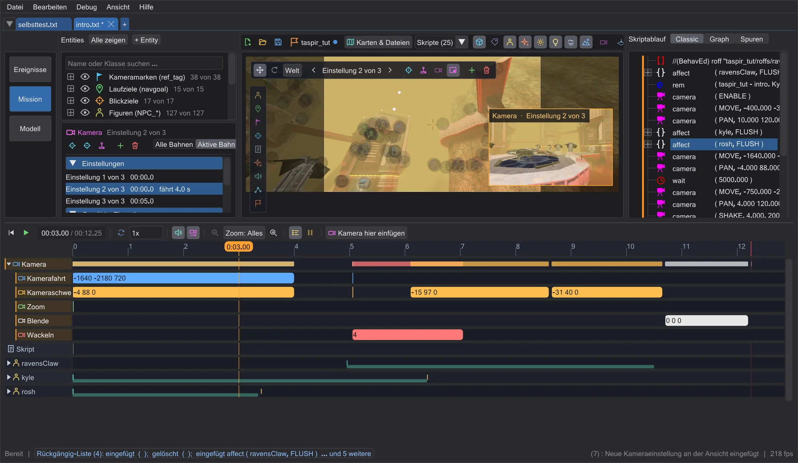
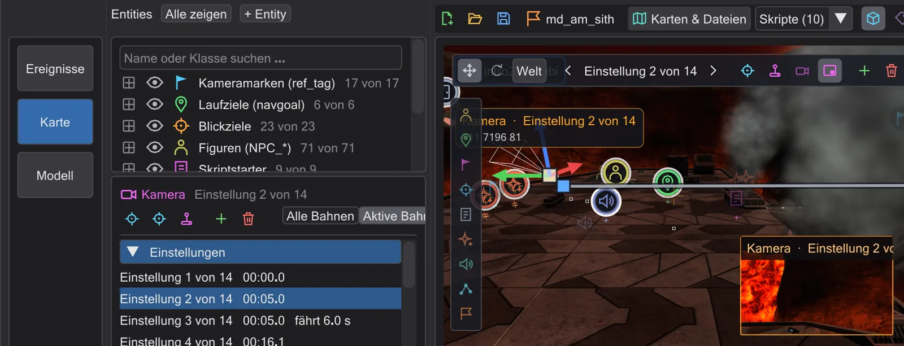
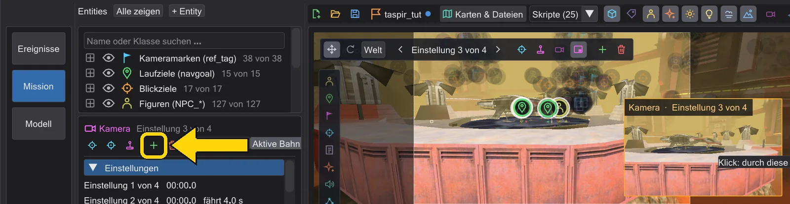
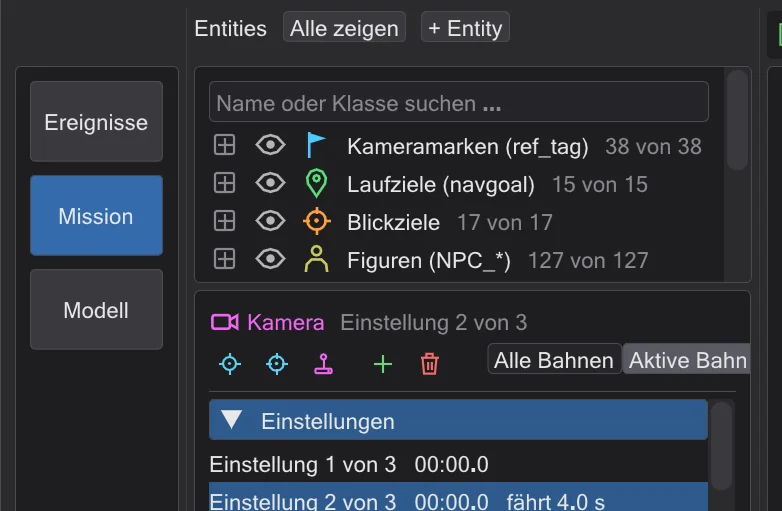

Eine erste Zwischensequenz
Zwei Kameraeinstellungen, eine weiche Fahrt dazwischen, durch die Kamera angesehen und fürs Spiel übersetzt.
Schritte#
- 1
Die Mission öffnen. Datei → Mission laden,
MD_Missions_Ep3.pk3wählen,md_am_sithanklicken. Die Karte öffnet sich mit allen Skripten der Mission in Reitern; bleib im Reiterintro2_sith.
Die Mission ist offen. - 2
Die Kamera wählen. Das Kamerasymbol auf der Karte anklicken (oder die Zeile Kamera der Zeitleiste). Links erscheinen ihre Einstellungen, auf der Karte ihre Bahn.

Die Kamera ist gewählt. - 3
An eine gute Stelle fliegen und eine Einstellung anlegen. Rechte Maustaste halten und mit W A S D fliegen, bis dir die Ansicht gefällt. Neue Kameraeinstellung hier drücken: ein
camera ( MOVE )undcamera ( PAN )an deiner Ansicht werden hinter der gewählten Einstellung eingefügt.
Eine neue Einstellung an der jetzigen Ansicht. - 4
Eine Fahrzeit geben. Unter Gewählte Einstellung Fahrzeit auf
3(Sekunden) setzen: die Kamera fliegt jetzt drei Sekunden von der vorigen Einstellung zu dieser.0wäre ein Schnitt.
Die Fahrzeit im Kamerafeld. - 5
Ansehen. Kameravorschau einschalten und das kleine Bild anklicken, um durch die Kamera zu schauen, dann den Abspielknopf (▶) unter der Karte drücken. Die Zeitleiste spielt die Szene, wie das Spiel sie zeigen wird - mit Ton, wenn Ton an ist.

Beim Abspielen durch die Kamera schauen. - 6
Speichern und übersetzen. Ein Skript aus einem
.pk3hat noch keine Datei, darum fragt das erste Speichern, wohin: wähle denscripts-Ordner deines Mods (zum BeispielMD\scripts\md_am\). Übersetzen! schreibt dann daneben die.ibi, die das Spiel ausführt. Bei einer eigenen Mission packt Mission speichern alles in ein.pk3- siehe Eine eigene Mission.
Die Aktionsspalte - Übersetzen! steht unter den Datei-Knöpfen und leuchtet grün, wenn es geklappt hat.


Wie weiter#
Greif das Kamera-Gizmo zwischen zwei Einstellungen, um dort einen Schlüssel zu setzen (Eine Einstellung verschieben und drehen), oder flieg eine ganze Einstellung selbst mit Steuern (Eine Einstellung selbst fliegen (Steuern)).